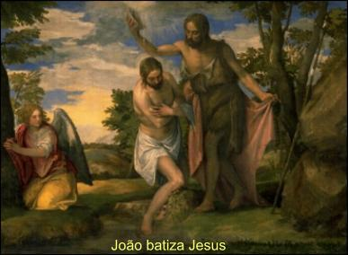

"Sacramento do Batismo, da Crisma e Sagrada Comunhão"
=Instruções aos Pais e Padrinhos=
"Toda a autoridade
sobre o Céu e sobre a Terra Me foi entregue. Ide, portanto, e fazei que todas as
nações se tornem Discípulos, batizando-as em nome do Pai, do Filho e do
Espírito Santo e ensinando-as a observar tudo quanto vos ordenei. E eis
que Eu estou convosco todos os dias até a consumação dos séculos!"
(Mt 28, 18-20)

"ÍNDICE"
- APRENDIZADO PRÁTICO E TEÓRICO
- SÍMBOLOS E SINAIS DO BATISMO
- TEOLOGIA SACRAMENTAL (Doutrina do Batismo)
- EUCARISTIA OU CEIA DO SENHOR E SANTA MISSA
- LINKS, E-MAIL, EMPRESAS DE BUSCA